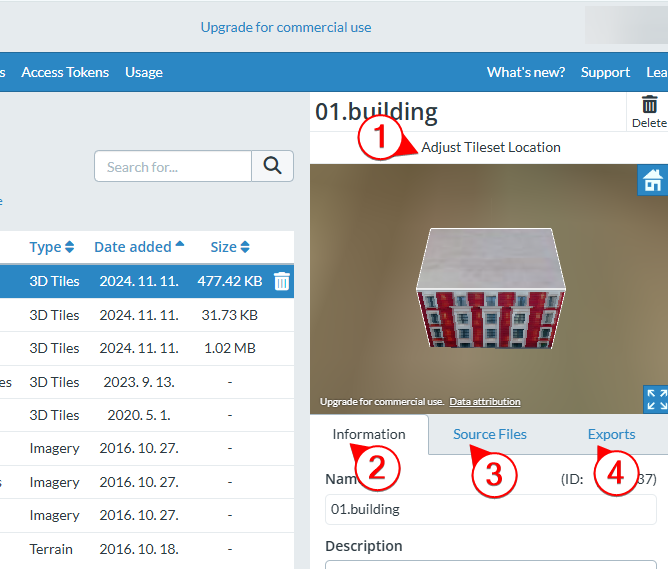

5. 세슘 기초 실습(1)
1. 세슘의 특징이 아닌 것은?
- 무료이며 누구나 사용할 수 있다.
- 사용자가 추가한 asset들을 3D 형태로 보여준다.
- 나만의 3D 맵을 만들 수 있다.
- 내가 올린 3D asset들은 기본적으로 나한테만 보인다.
2. blender에서 만든 3D 모델을 세슘에 asset으로 등록할 때 사용하는 파일 포맷은?
- .blender
- .fbx
- .blend
- .asset
3. blender에서 만든 3D 모델을 fbx 파일로 내보내기 할 때 틀린 것은?
- 특정 모델만 fbx 파일에 추가되게 설정할 수 있다.
- File / Export / FBX(.fbx) 메뉴를 선택한다.
- export 하기 전에 export할 모델을 선택해 놓아야 한다.
- 기본 설정으로 texture가 자동 포함된다.
4. blender로 만든 3D 모델을 세슘에 asset으로 등록한 후에 할 일은?
- 정합을 확인한다.
- texture를 변경한다
- ID를 확인한다.
- 좌표를 설정한다.
5. 세슘을 무료로 사용할 수 있는 경우는?
- 비상업적인 개인적인 프로젝트
- 국가 SOC 사업
- 공공기관의 업무
- 대학의 상업적인 프로젝트
6. 세슘에 등록한 3D asset의 좌표를 잘못 등록할 것을 알게 되었다. 현재 asset 관리 창에 있을 때 이 문제를 해결하기 위해 눌러야 하는 것은?

- 1
- 2
- 3
- 4
7. 세슘 제품군 중 사용자의 3D asset 들을 등록 등 관리하고, 3D 맵을 만들기 위한 자료를 제공하는 것은?
- cesium ion
- cesium js
- cesium for unreal
- cesium for unity